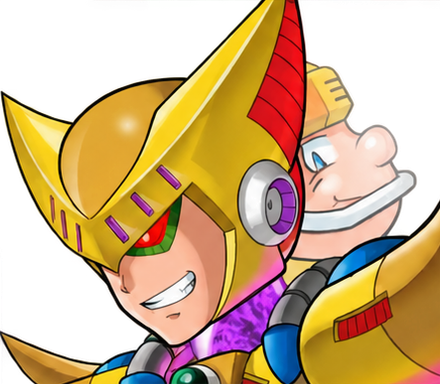

Colonel
Após quatro Mavericks há um confronto intermediário. Na rota final, X usa o Buster; Zero usa Kuuenbu e salta quando Colonel desaparece.

Double · campanha de X
Desvie das investidas pelas paredes e use Double Cyclone. Double aparece apenas na campanha de X e por isso não integra o catálogo dos oito Mavericks.
Iris · campanha de Zero
Ataque o cristal roxo com Kuuenbu e evite acertar a armadura quando as minas estiverem ativas. Iris substitui Double na campanha de Zero.
General
A cabeça é o ponto vulnerável. X usa Twin Slasher; Zero alcança com Kuuenbu. Use os punhos como referência para saltar sobre os disparos.
Sigma · três formas
Primeira forma: Rising Fire ou Ryuenjin. Segunda: Lightning Web ou Kuuenbu. Na forma final, preserve os dois Energy Tanks e ataque as cabeças gigantes em suas janelas.
Itens especiais
Há 8 Heart Tanks, 2 Energy Tanks, 1 Weapon Tank e 1 EX Tank. X ainda possui quatro cápsulas. Ultimate Armor e Black Zero dependem de códigos na seleção de personagem.